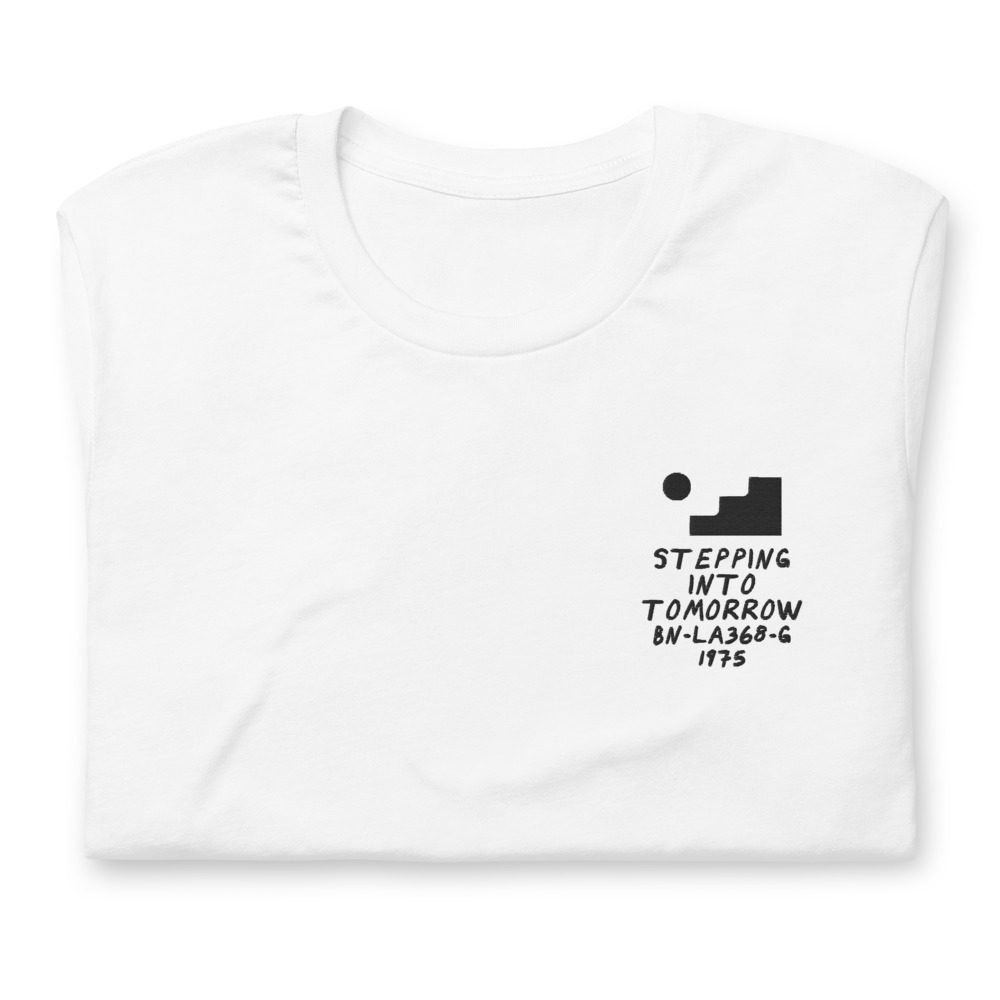
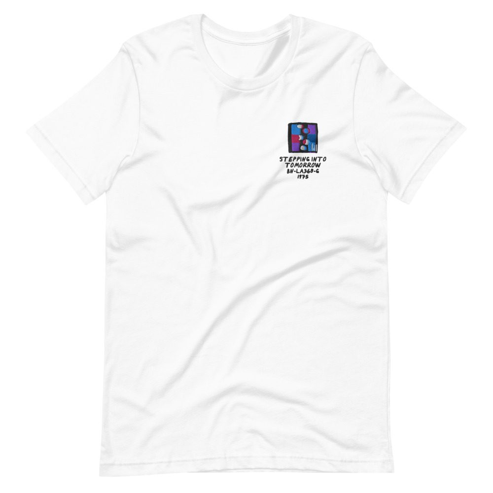

Donald Byrd – Stepping Into Tomorrow
LP · Blue Note BN-LA368-G · 1975
Ungraded, checked before it ships
Comes with its own shirt: a white tee embroidered on the chest with my drawing of the cover over its title, catalog number and year. Pick a size at checkout. It’s made for you and ships on its own.


Buy $128
Side 1
- Stepping Into Tomorrow5:11
- Design A Nation4:19
- We’re Together4:23
- Think Twice6:10
Side 2
- Makin’ It3:45
- Rock And Roll Again6:09
- You Are The World4:29
- I Love The Girl3:53
Alto Saxophone, Clarinet
Gary Bartz
Backing Vocals
Freddie Perren, Fonce Mizell, Kay Haith, Lorraine Kenner, Margie Evans, Stephanie Spruill, Larry Mizell
Clavinet
Fonce Mizell
Trumpet
Fonce Mizell, Donald Byrd
Congas
Mayuto Correa
Drum, Jew’s Harp, Drums
Harvey Mason
Electric Bass
Chuck Rainey
Guitar
David T. Walker, John Rowin, Rhonghea Southern
Flugelhorn, Solo Vocal
Donald Byrd
Percussion
Roger Sainte, Stephanie Spruill, Stuff ‘N’ Ramjett
Piano, Organ
Jerry Peters
Synthesizer, Electric Piano
Larry Mizell
Whistling
James Carter
Produced by George Butler, Larry Mizell · Conducted by Larry Mizell